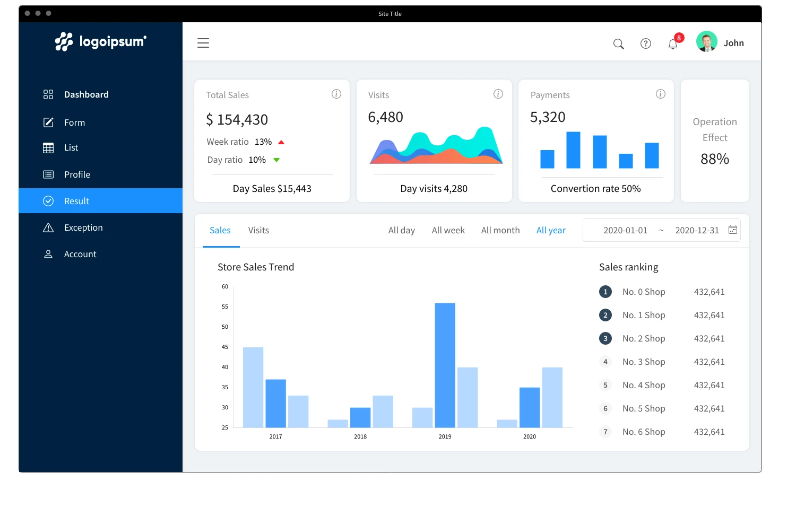
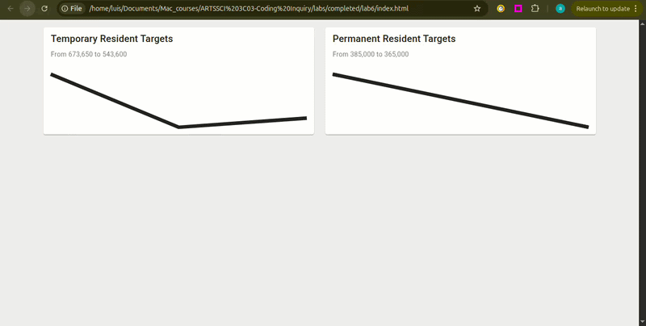
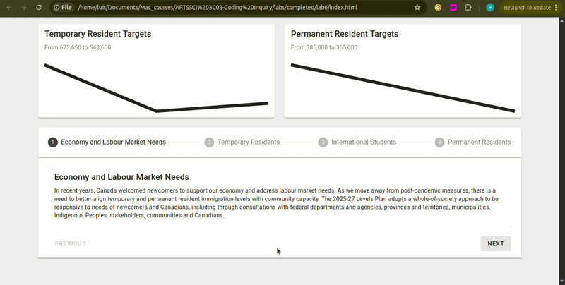
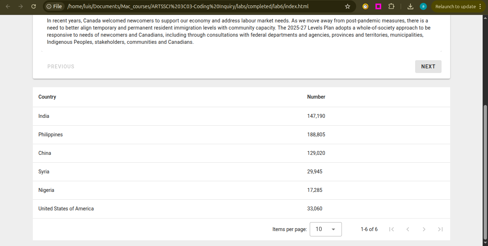

Lab 6: Creating a Data Dashboard
General Description
In this lab, you will build a Data Dashboard to visualize a topic of your
choice. You will learn to use specialized Vuetify components like Sparkline, Stepper, and Data
Table, to transform complex datasets into an
interactive user experience.
While you are free to select your own theme (e.g., Sports Stats, Financial Trends, or Environmental
Data), this lab will use the 2025-2027 Canada Immigration Levels Plan as the primary example
to demonstrate how to map data to the different components.
Learning Objectives
- Practice advanced Data Structuring and Display by organizing Objects into
v-sparkline,v-stepper, andv-data-tablecomponents. - Implement logic to map numeric arrays directly to the v-sparkline component, turning raw numbers into visual stories.
Table of Contents
- Pre-requisite: Setup Your Project
- Choose a Theme
- Visualizing Trends with Sparklines
- Using Steppers For Sequencial Content
- Data Tables & Statistics
- Optional Challenge: Polishing the Dashboard
- Wrap Up & Sharing Your Work
Pre-requisite: Setup Your Project
- Create a new folder for this lab.
- Inside your new folder create the app.js and index.html files with their starter/boilerplate code. Refer to Lab 2, section "Setup Starter Vuetify Code" to complete this step.
Choose a Theme
A Data Dashboard is an information management tool that visually tracks, analyzes, and displays metrics, and key data points. Dashboards use visual elements like charts, tables, and progress trackers to help users understand complex information at a glance. Click here to read more.
In this lab, you will build a dashboard that visualizes a specific topic using data-driven components. While this lab uses the 2025-2027 Canada Immigration Levels Plan as the primary example, you are encouraged to choose a different theme that interests you, as long as it follows the same data logic.
- Brainstorm a theme for your dashboard. Think of topics that involve numbers over time or sequencial processes (e.g., Sports Season Stats, Global Climate Trends, Personal Finance).
- Identify the following data components for your chosen theme:
- Trend Data: At least 2 categories that have numeric values over a multi year/month/day period (to be used in a sparkline).
- Process Steps: A 3-4 step explanation of a policy, workflow, or guide related to your theme (to be used in a stepper).
- Detail Records: A list of at least 5-6 items with associated statistics (to be used in a data table).

Visualizing Trends with Sparklines
A Sparkline is a condensed, lightweight chart designed to show a trend over time at a glance. In a dashboard, these are perfect for visualizing how a specific metric (like population, sales, or scores) changes across different periods. While we use 2025-2027 immigration data as our example, you should apply this logic to the timeline relevant to your chosen theme.
Create the Trend Data
- In your
app.js, create an Array of Objects with atitle, asubtitle, and atrendarray. See example below: - The first number in the array represents the starting point (i.e., target numbers for 2025).
- The second number in the array represents the next point (i.e, target numbers for 2026).
- The last number represents the end point (i.e., target numbers for 2027).
- The sparkline will plot them automatically, based on the highest and lowest values in your array.
const immigrationTargets = [
{
title: 'Temporary Resident Targets',
subtitle: 'Plan for 2025 - 2027',
trend: [673650, 516600, 543600]
},
{
title: 'Permanent Resident Targets',
subtitle: 'Plan for 2025 - 2027',
trend: [395000, 380000, 365000]
}
];
trend property is an Array of Numbers. Vuetify uses these numbers to plot
points on a graph. In the example above:
Render the Sparkline Cards
- In
index.html, use av-forloop to generate av-cardfor each object in your array. Refer to Lab 3, section 3. Generating Cards with the v-for Loop to complete this step. - Inside the card, add the
<v-sparkline>component. - Connect your data using the
:model-valuecommand, using the dot notation to access the object's data. - See example below:
- Add the command
auto-draw. This tells the component to animate the line drawing from left to right when the page loads.
<v-sparkline :model-value="immigrationTargets.trend"></v-sparkline>
:model-value tells the sparkline what data
it should be visualizing. In this case, :model-value="target.trend" tells the
sparkline:
"Look at the trend array inside the current object and use those numbers to draw the
line."
<v-sparkline :model-value="immigrationTargets.trend" auto-draw ></v-sparkline>

Using Steppers For Sequencial Content
A Stepper is a specialized component used to display content through a numbered sequence. This is an ideal component for breaking down complex workflows, multi-step instructions and sequencial information into digestible chunks that a user can navigate one at a time. While we use the Canada Immigration Plan categories as our example, you can use this for any sequential information related to your theme.
Create the Content Array
- In your
app.js, create an Array of Objects. In this example, the array is calledpolicies. - Each object should contain at least, a
title(Vuetify will look specifically for this field to use for the step label) and adescription(the main content for that step). See example below:
const policies = [
{
title: 'Economy and Labour Market Needs',
description: 'In recent years, Canada welcomed newcomers to support our economy...',
},
{
title: 'Temporary Residents',
description: 'To ensure a well-managed migration system the Government is reducing...',
},
{
title: 'International Students',
description: 'In keeping with these reductions, targets for new temporary resident...',
},
{
title: 'Permanent Residents',
description: 'The 2025-27 Levels Plan projects a decrease in overall permanent...',
}
];
Implementing the Stepper
- Use the
<v-stepper>component and use the:itemscommand to generate the step headers. - Inside the stepper, add a
<template>tag and usev-forto loop through your array. - Add an
indexto yourv-for. This tracks the position of the current item (starting at 0), which we will need to identify each step. - In app.js, create a function to generate the step/item number dynamically.
Vuetify expects the
format
item.1,item.2, etc. - Add a dynamic
v-slotto the template using the function created above. This ensures your content connects to the correct step number. - Finally, place a
v-cardinside the template to display the information from your objects using dot notation.
<v-stepper :items="policies">
</v-stepper>
:items command is used by the Stepper to automatically create the navigation
header. By default, the stepper looks for a title property inside each object of
your array to label the steps.
<v-stepper :items="policies">
<template v-for="policy in policies" :key="policy.title">
</template>
</v-stepper>
<v-stepper :items="policies">
<template v-for="(policy, index) in policies" :key="policy.title">
</template>
</v-stepper>
function step(index) {
let stepNumber = index + 1
return "item." + stepNumber
}
<v-stepper :items="policies">
<template v-for="(policy, index) in policies" :key="policy.title" v-slot:[step(index)]>
</template>
</v-stepper>
[step(index)] tells Vue that the slot name is dynamic. It
runs your function, gets the result (like item.1), and assigns the content to that
specific step.
<v-stepper :items="policies">
<template v-for="(policy, index) in policies" :key="policy.title" v-slot:[step(index)]>
<v-card>
<v-card-title>{{ policy.title }}</v-card-title>
<v-card-text>{{ policy.description }}</v-card-text>
</v-card>
</template>
</v-stepper>

Data Tables & Statistics
The final layer of a dashboard is the raw data. A Data Table is a powerful component that automatically organizes an array of objects into rows and columns. This allows users to scan through large lists of information and compare specific values.
Organizing Your Dataset
- In your
app.js, create an array that contains your raw data. For our immigration example, we will call thisimmigrationByCountry. - Each object in your array should represent one row in the table. Ensure every object uses the
same fields (e.g.,
countryandnumber), as these keys will become the column headers.
const immigrationByCountry = [
{ country: 'India', number: '147,190' },
{ country: 'Philippines', Number: '188,805' },
{ country: 'China', number: '129,020' },
{ country: 'Syria', number: '29,945' },
{ country: 'Nigeria', number: '17,285' },
{ country: 'United States of America', number: '33,060' }
];
Displaying the Table
- In your
index.html, add av-data-tablecomponent. - Use the
:itemscommand to connect the table to your array.
<
<v-data-table :items="immigrationByCountry"></v-data-table>

Optional Challenge: Polishing the Dashboard
Now that your data is displayed, try these challenges to enhance the visual and interactive aspects of your dashboard.
Challenge 1: Branding and Layout Styling
-
Add a
v-app-barat the top of your page. Use thev-app-bar-titleto clearly state the name of your dashboard. - Differentiate the sections of your dashboard (e.g., the sparkline area vs. the table area) by applying different colors. Follow colors documentation here: https://v3.vuetifyjs.com/en/styles/colors/#classes
Challenge 2: Visualizing the Content
- Standard text can be overwhelming. Try adding visual cues (e.g., icons or images) to your
v-steppercards to make the information more digestible.
Challenge 3: Managing Screen Space (Collapsible Sections)
-
Use
v-expansion-panels. to make sections collapsible so the user can focus on one piece of data at a time. Follow Expansion Panels documentation: https://vuetifyjs.com/en/components/expansion-panels/#api.
Wrap Up & Sharing Your Work
Congratulations! You have successfully built a professionally looking data dashboard. In this lab, you practiced the following skills:
-
Data Structuring & Display: You practiced organizing raw Objects into
high-performance, structured interfaces using the
v-data-table.
Time-Series Visualization: You implemented logic to map numeric arrays directly
to the
v-sparkline component, turning raw numbers into visual stories.